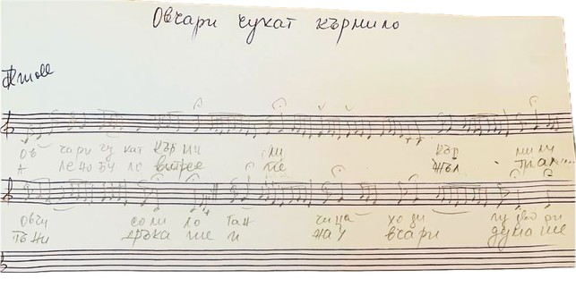
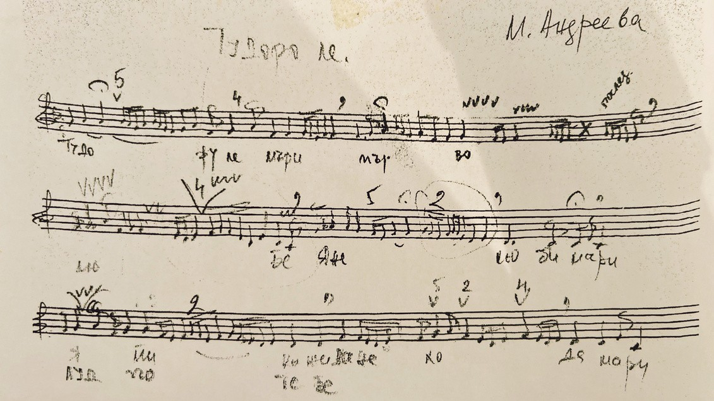

MOOWS / Issue 01 · August 2026
What Can’t Be Written (Notes from an Oral Tradition)
These are handwritten transcriptions of audio recordings of lesser-known Bulgarian folk songs, notated by ear. The small symbols, such as ~ and v, indicate vocal ornaments that should be added in performance. Capturing every nuance of a traditional singer's interpretation in conventional musical notation is often next to impossible, so these symbols serve as performance cues rather than precise pitches.
An authentic interpretation of such scores also depends on knowing the song's ethnographic region, as each region has its own distinct ornamentation style. There is no universal notation system for these ornaments - they are traditionally learned through listening, imitation, and oral transmission.

Tudoro le
Oh Tudora, my first love
Yane my dear
Tell me not to lose my mind over you
Crazy about you, crazy for you
I’ve left my buffaloes lying in the barn
Lying in the barn, eating dust
Oh Tudora, because of you
I wander aimlessly, thirsty
I carry bread, yet I go hungry

Shephers are striking the trough
The shepherds are striking the trough,
where the sheep come for their salt
Ganchitsa paces around the garden.
Her crimson veil* blows in the wind,
Golden coins* chime as she walks,
And she calls out to the shepherds
*jewellery and attire suggesting wealth
and high social status